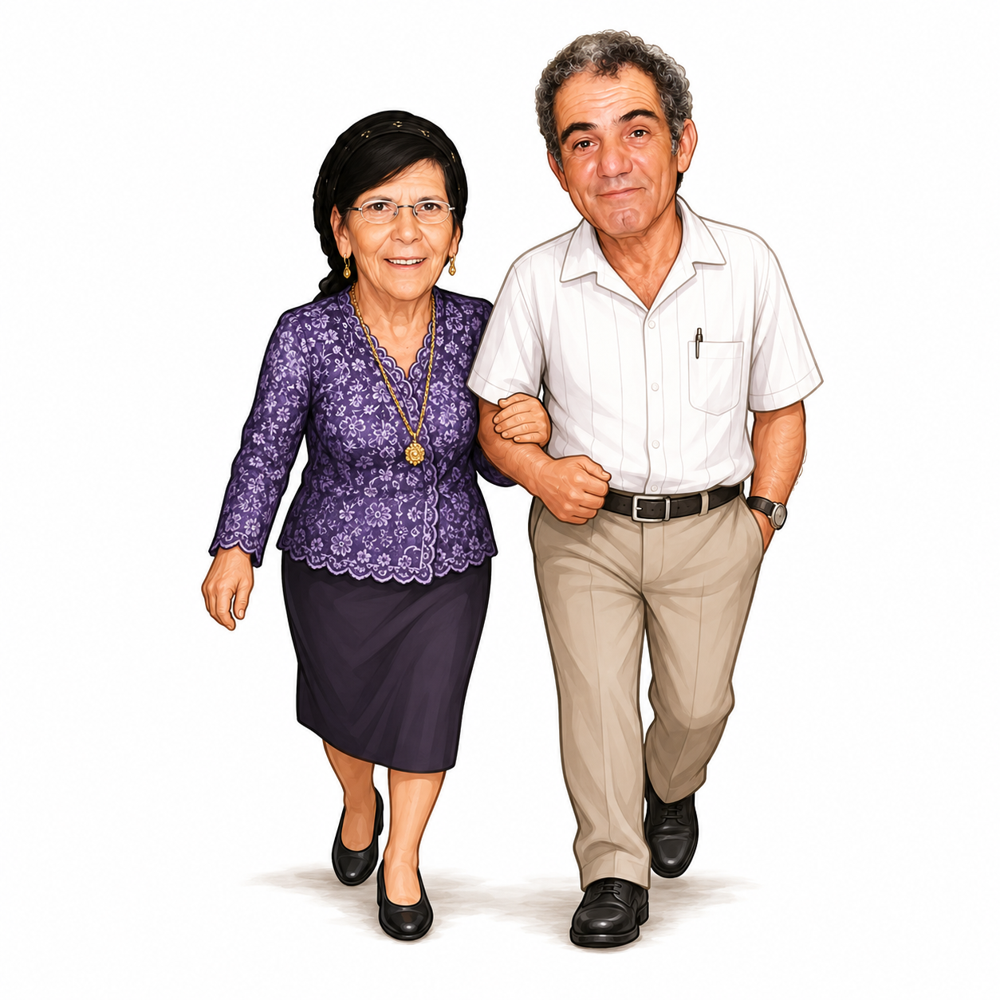

👴👵 ההשראה של המירוץ


👴
סבא אלי ז"ל
ההשראה של המירוץ · אהב פיתות חמות ומירוצים
👵
סבתא רחל ז"ל
שמרה על כולם · דאגה שישתו מים וינצחו בכיף
רגעי זיכרון קטנים
👍🏆😂❤️🔥
מדי פעם, ברגעים מפתיעים — ציטוט, משפט או תמונה שלהם צצים על המסך. טעם טוב ומרענן של זיכרון — במינון הנכון, בלי להכביד.
סבא וסבתא אינם משתתפים — הם ההשראה והזיכרון שמלווה את המשפחה.
הם מופיעים בעדינות ובהפתעה — ציטוט, רגע זיכרון, או הספינר המהלך במסכי טעינה.